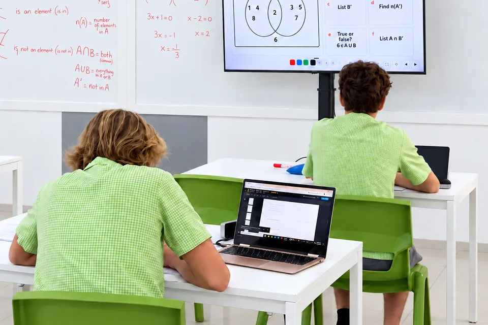
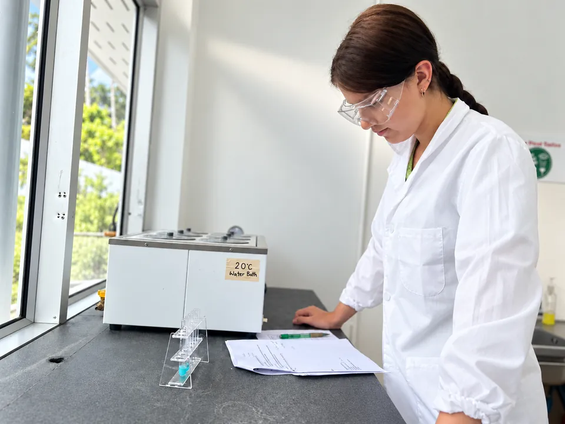

Secondary
Cambridge International learning in Years 7-9, progressing to Cambridge IGCSE in Years 10-11.
Depth, independence and preparation
In Secondary, students build on their earlier learning through a broad Cambridge International programme. Teaching develops secure subject knowledge alongside critical thinking, communication, independence and the ability to apply learning in new contexts.
Formative assessment takes place throughout lessons and units, helping teachers check understanding, address misconceptions and adapt teaching.

The Cambridge IGCSE pathway
Cambridge IGCSE is an internationally recognised qualification typically studied by students aged 14 to 16. At Greenacre, students follow the IGCSE pathway in Years 10 and 11, preparing them for further study including A Levels and other post-16 routes.
Preparation for Cambridge IGCSE develops through classwork, independent learning, quizzes, assignments, end-of-unit assessments, Cambridge assessment materials and Cambridge-style examination practice.
Students are expected to study and sit examinations in at least six IGCSE subjects, including English, mathematics, science and humanities. The exact combination of subjects may vary according to the pathway available and the needs of individual students.
Subjects offered within the current Greenacre pathway include:

Preparing students for what comes next
Greenacre has high expectations of Secondary students and challenges each learner to fulfil their potential. Students are encouraged to develop their own opinions, ideas, independence and confidence as they progress towards IGCSE.
Assessment is used throughout Secondary to monitor progress and prepare students for Cambridge IGCSE, while teaching is adapted where additional support or challenge is needed.
Greenacre prepares students progressively for the expectations of formal Cambridge assessment as they move through Secondary.
English as an Additional Language
Greenacre is a multilingual international community. Students learning English as an additional language are supported to develop the language and subject-specific vocabulary they need to participate confidently in the curriculum. Teaching is adapted through appropriate scaffolding and differentiation while maintaining high expectations for every learner.
Further details about EAL support and applicable charges can be found in the 2026/27 fee schedule.